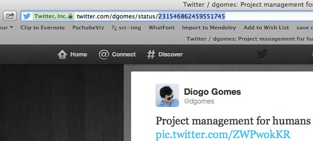
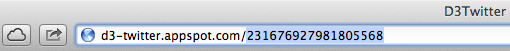

Visualize the network created when a tweet is retweeted.
Go to your address bar and fill in the status id of the tweet you want to visualize.
Walk through:
Open the tweet you want to visualize, and copy the large number
Go to http://d3-twitter.appspot.com/, and paste the number at the end of the url
that's it!
Sure you can! just place this line of code with the correct status id: <iframe src="http://d3-twitter.appspot.com/231546862459551745" width=670px height=560px frameborder=0></iframe>
Sorry, it seems you might be running an old browser version. Please update your web browser.
This demo makes use of d3js, google app engine (GAE) and tweepy. Oh! and of course Python.
One of the circle's represents the author of the status message (the one in dark blue), then each circle has a dimension proportional to the number of followers (capped at 400 followers).
The most likely reason is that a protected user (who likes to keep it's privacy) retweeted the status therefore breaking the graph.
Here's the thing, I wanted to test drive GAE with Python and needed to come up with a simple application. Just a few days before one of my tweets started being retweeted by a bunch of folks I never met, so I googled for a tool to visualize the connection between those folks and saw nothing that good enough (hereby imply that flash is not OK). So I guessed it was worth reinventing the wheel!
The app will use your twitter account to request information from twitter on the users who have retweeted the status you requested. The authorization is valid only for a single status check, although the status results will be cached for the next user who uses the app to get the visualization of the same status.
D3 Twitter does not keep your user nor password in anyway, it uses the OAuth protocol to request Twitter permission to use the API on your behalf. That said, twitter has a rate limit on the number of calls one can make at it's API (see here). Due it's nature, D3 Twitter might issue an unusual number of API calls to twitter eventually reaching the said limit. When that happens, twitter will not enable any application to issue calls to it's API for a limited period of time (usually few minutes). So in case that happened to you, don't panic! Your application will be back in a couple of minutes, and sorry for that :)
That would be me.
By no means.
It's a word play with D3js and Twitter, just that nothing else.
Probably, but you can always ask me for the code (@dgomes)
You are putting in the questions, I'm just answering them. Still have questions? contact me